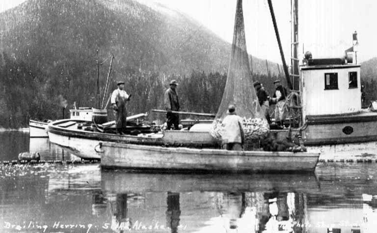
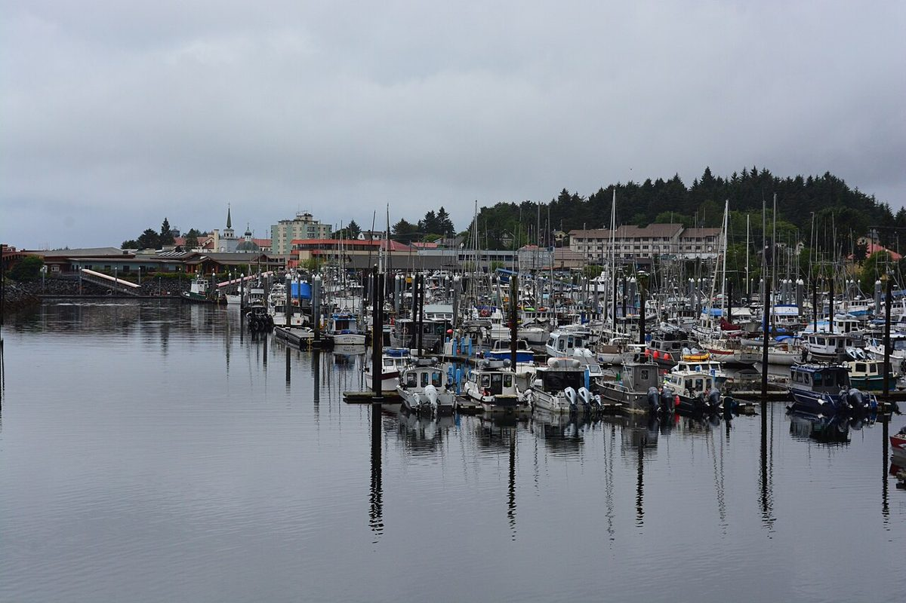

Directory / Southeast Alaska / Sitka, AK
Sitka tides — Sitka Sound, Eliason, Thomsen, ANB, Crescent & Sealing Cove
High and low tides for the coming week from NOAA station 9451600 (Sitka, Sitka Sound — 57.0511, -135.3441). Times are local (AKST/AKDT). Heights are feet above Mean Lower Low Water (MLLW). Sitka is the only big Southeast Alaska town that faces the open Pacific. Boats leave Sitka Channel, pass the islands of Sitka Sound, and are on the outer coast within an hour, with Mount Edgecumbe on the horizon. The City and Borough of Sitka runs five boat harbors (Eliason, Thomsen, ANB, Crescent, and Sealing Cove on Japonski Island) plus the City Wall port facility. The local harbor guide calls it the largest boat harbor system in Alaska. Trollers, longliners, seiners, and charter boats share the floats.
Outer-coast weather, modest tides & a new haul-out
No inside passage here. Sitka Sound opens straight onto the Gulf of Alaska, and ocean swell reaches the outer islands. The api.weather.gov zone lookup for the tide station returns PKZ642 Cape Decision to Cape Edgecumbe out to 15 NM, an outside-waters zone. North of Cape Edgecumbe (the Kruzof Island coast and Salisbury Sound) is PKZ643 Cape Edgecumbe to Cape Spencer. In the forecast issued 9:01 PM AKST Sun Nov 15, 2026, both zones carried a Small Craft Advisory through late Monday night. PKZ642 called for SE 30 kt and 17 ft seas tonight and 14–16 ft seas into Tuesday. The offshore buoy 46084 (about 25 NM SSW of Cape Edgecumbe) is the best check on what the swell is doing outside.
The tide swing. Sitka’s range is smaller than Ketchikan’s or Juneau’s. Mean Higher High Water is 9.9 ft above MLLW. In the NOAA predictions fetched 2026-11-15, the largest swing in the next five weeks is on Wednesday, November 25, 2026: a 12.5 ft high at 12:22 PM, then a −2.4 ft low at 7:21 PM, a drop of about 15.0 ft. Minus tides come every evening from Nov 22 through Nov 29, and again from Dec 6 through Dec 12. All of them fall after dark (sunset is about 3:45 PM in mid-November and about 3:20 PM by Dec 20).
Grid and haul-out. The city has a tidal grid, a gear work float, and a drive-down load/unload zone. Daylight lows for grid work are scarce in winter. The best ones in the next five weeks are about 1.7 ft at 3:41 PM on Fri Nov 20, 1.8 ft at 3:09 PM on Thu Dec 3, and 1.4 ft at 3:04 PM on Sat Dec 19, each close to sunset. Sitka went without a public travelift after Halibut Point Marine closed its 88-ton yard on March 31, 2022. The city’s new 150-ton Marine Travelift at the Gary Paxton Industrial Park (Sawmill Cove) is now open and operated by Highmark Marine (907-217-2850). Highmark’s vendor list is in the directory below.
Arriving. Per the city’s harbor regulations, harbor staff are on duty seven days a week from 8 a.m. to 11 p.m. and answer on VHF 16. They assign transient moorage by radio when you arrive. Eliason Harbor is the designated transient harbor, and transients are not allowed in Crescent Harbor. Do not enter a slip without the Harbormaster’s permission.
Computed from NOAA CO-OPS hi/lo predictions for 9451600 (2026-11-16 through 2026-12-20) and station datums (1983–2001 epoch), the NWS coastal waters forecast text and api.weather.gov zone lookup, the City and Borough of Sitka Harbor Department pages, the Sitka Harbor Guide 2026, the city’s GPIP haul-out project charter, and Highmark Marine’s shipyard page, all checked 2026-11-15 AKST. Sunset times are approximate (computed). Not for navigation.
Sitka then & now
Historic

.jpg){kind=link}
Current


Official NOAA predictions Station home NOAA chart viewer View on Windy
Port Sponsor — Sitka, AK
Top placement for fuel docks, marinas, yards, and marine businesses.
$25–$50 / month
Tuesday, November 17, 2026
| Tide | Time (local) | Height (MLLW) |
|---|---|---|
| High | 6:54 AM | 7.9 ft |
| Low | 12:36 PM | 5.0 ft |
| High | 5:57 PM | 7.3 ft |
Wednesday, November 18, 2026
| Tide | Time (local) | Height (MLLW) |
|---|---|---|
| Low | 12:44 AM | 2.2 ft |
| High | 7:43 AM | 8.3 ft |
| Low | 1:55 PM | 4.2 ft |
| High | 7:24 PM | 7.1 ft |
Thursday, November 19, 2026
| Tide | Time (local) | Height (MLLW) |
|---|---|---|
| Low | 1:42 AM | 2.5 ft |
| High | 8:25 AM | 8.9 ft |
| Low | 2:53 PM | 3.0 ft |
| High | 8:41 PM | 7.4 ft |
Friday, November 20, 2026
| Tide | Time (local) | Height (MLLW) |
|---|---|---|
| Low | 2:34 AM | 2.7 ft |
| High | 9:03 AM | 9.6 ft |
| Low | 3:41 PM | 1.7 ft |
| High | 9:46 PM | 7.8 ft |
Saturday, November 21, 2026
| Tide | Time (local) | Height (MLLW) |
|---|---|---|
| Low | 3:22 AM | 2.9 ft |
| High | 9:40 AM | 10.4 ft |
| Low | 4:25 PM | 0.4 ft |
| High | 10:42 PM | 8.4 ft |
Sunday, November 22, 2026
| Tide | Time (local) | Height (MLLW) |
|---|---|---|
| Low | 4:07 AM | 3.1 ft |
| High | 10:17 AM | 11.2 ft |
| Low | 5:07 PM | -0.7 ft |
| High | 11:33 PM | 9.0 ft |
Monday, November 23, 2026
| Tide | Time (local) | Height (MLLW) |
|---|---|---|
| Low | 4:52 AM | 3.3 ft |
| High | 10:57 AM | 11.9 ft |
| Low | 5:50 PM | -1.6 ft |
Tuesday, November 24, 2026
| Tide | Time (local) | Height (MLLW) |
|---|---|---|
| High | 12:21 AM | 9.4 ft |
| Low | 5:37 AM | 3.5 ft |
| High | 11:39 AM | 12.4 ft |
| Low | 6:35 PM | -2.2 ft |
Tide data: NOAA CO-OPS station 9451600, predictions (hi/lo, MLLW, local standard/daylight time). Refreshed with each nightly build; the marine-weather snapshot time below shows the latest fetch. Currents: the nearest NOAA current station in our port list is PCT4166 (Sitka Harbor, channel off Harbor Island, about 0.4 km away) — see NOAA current predictions.
Marine weather & cameras
NWS marine forecast — Cape Decision to Cape Edgecumbe out to 15 NM (PKZ642)
Issued 239 PM AKST Mon Nov 16 2026. Snapshot fetched 2026-11-16 21:33 AKST from NWS text product. Official zone forecast · Raw text
...SMALL CRAFT ADVISORY THROUGH LATE TUESDAY...
- .TONIGHT...S wind 20 kt becoming SE 30 kt late. Seas 15 ft. Rain.
- .TUE...SE wind 30 kt. Gusts to 45 kt. Seas 17 ft. Rain in the morning.
- .TUE NIGHT...SE wind 25 kt diminishing to 15 kt late. Seas 13 ft. Rain late.
- .WED...NW wind 10 kt. Seas 11 ft. SW swell.
- .WED NIGHT...SE wind 10 kt. Seas 9 ft. SW swell.
- .THU...SE wind 20 kt. Seas 11 ft.
- .FRI...E wind 20 kt. Seas 11 ft.
- .SAT...E wind 15 kt. Seas 9 ft.
NWS marine forecast — Cape Edgecumbe to Cape Spencer out to 15 NM (PKZ643)
Issued 239 PM AKST Mon Nov 16 2026. Snapshot fetched 2026-11-16 21:33 AKST from NWS text product. Official zone forecast · Raw text
...SMALL CRAFT ADVISORY THROUGH LATE TUESDAY...
- .TONIGHT...S wind 25 kt becoming E late. Seas 14 ft. Rain late.
- .TUE...SE wind 30 kt. Gusts to 45 kt. Seas 16 ft. Rain.
- .TUE NIGHT...SE wind 25 kt diminishing to 15 kt late. Seas 14 ft. Rain late.
- .WED...SW wind 10 kt. Seas 11 ft. SW swell.
- .WED NIGHT...SE wind 10 kt. Seas 9 ft.
- .THU...E wind 20 kt. Seas 11 ft.
- .FRI...NE wind 20 kt. Seas 11 ft.
- .SAT...E wind 15 kt. Seas 9 ft.
Nearby NDBC observation — Sitka (ITKA2, NOAA 9451600)
999.8 hPa, water 48°F
Observation time 2026-11-16 20:30 AKST (converted to AKST). Attribution: NOAA NDBC station ITKA2. Snapshot fetched 2026-11-16 21:33 AKST.
Nearby NDBC observation — Sitka Harbor (SHXA2, Marine Exchange of Alaska)
wind 140°, 4 kt, gust 10 kt, 999.4 hPa
Observation time 2026-11-16 21:12 AKST (converted to AKST). Attribution: NOAA NDBC station SHXA2. Snapshot fetched 2026-11-16 21:33 AKST.
Nearby NDBC observation — Cape Edgecumbe buoy (46084, 25 NM SSW of Cape Edgecumbe)
wind 160°, 17 kt, gust 23 kt, seas 10.8 ft, 998.4 hPa
Observation time 2026-11-16 20:20 AKST (converted to AKST). Attribution: NOAA NDBC station 46084. Snapshot fetched 2026-11-16 21:33 AKST.
Harbor webcams
- FAA WeatherCams — Sitka Rocky Gutierrez Airport (PASI) (NE, S, W, and NW views from the airport on Japonski Island, across Sitka Channel and out over Sitka Sound; link only, not embedded)
- EarthCam — Sitka Cam (live view over Crescent Harbor and the downtown waterfront; free to watch on EarthCam’s site; link only)
- Sitka.com — Live Sitka Webcam: Crescent Harbor & Centennial Hall (the same EarthCam live stream, with a guide to what is in view, including the Sisters peaks)
We checked each camera page on 2026-11-15 around 9:30 PM AKST. The Sitka.com page carries EarthCam’s “EarthCam Live: Sitka, Alaska” stream. Expect dark frames on winter nights. Harbor businesses with a public cam: email us and we will link it.
Sitka boater notes (official links)
- City and Borough of Sitka Harbor Department. Office next to Thomsen Harbor at 617 Katlian St: 907-747-4017, harbors@cityofsitka.org. Office hours are Monday–Friday 8 a.m. to 4 p.m. (closed holidays). Restrooms and showers are above Eliason Harbor. For the GPIP dock, the city says to call the Harbor Department on weekdays.
- Harbor regulations: staff on duty 8 a.m. to 11 p.m. daily on VHF 16; transient moorage is assigned when you arrive. The city also runs a harbor email notification list for weather alerts and repairs (link on the Harbor Department page).
- Gary Paxton Industrial Park (Sawmill Cove): the city-owned 150-ton haul-out operated by Highmark Marine, the boat yard agreement, and the deep-water dock. Highmark’s Sitka Shipyard page lists the shipyard store and local marine trades.
- Emergency numbers from the Sitka Harbor Guide 2026: dial 911. USCG emergency 1-800-478-5555; USCG Marine Safety Detachment 907-966-5454; Sitka Police (business) 907-747-3245; SEARHC Mt. Edgecumbe Hospital 907-966-2411.
- Alaska Marine Highway — Sitka terminal at 5307 Halibut Point Rd, about 7 miles north of town.
- ADF&G Southeast commercial fisheries (openers, emergency orders, and Sitka Sound herring announcements) and Sitka sport fishing.
- NOAA ENC chart viewer for Sitka Sound, Sitka Channel, Olga and Neva Straits, and the outer coast. We link to NOAA’s viewer and do not host charts.
Local marine & shore directory
Verified public listings only. List free · Get featured
Marine services
Moorage & marinas
Seafood processors & buyers
Fuel docks
Shipyards & haul-outs
Boat repair & mechanics
Marine suppliers & chandleries
Electronics sales & installation
Welding & fabrication
Canvas & upholstery
Surveyors
Towing & salvage
Ice & bait
No verified listing yet — list your business free.
Fishing charters
Ashore for boaters
Groceries & provisioning
Hardware
Liquor stores
Laundromats
Showers
Lodging
Restaurants
Medical clinics
Pharmacies
Post office & shipping
Airport & floatplane
Propane
Auto & truck rental
We checked these listings on 2026-11-15 against public sources: the City and Borough of Sitka Harbor Department pages, Highmark Marine’s Sitka Shipyard vendor list, the Greater Sitka Chamber of Commerce member directory, the Sitka Economic Development Association’s Sitka Marine Industries directory (used only where a current source agreed), Petro Marine’s and Delta Western’s location pages, and each business’s own site where it has one. Seafood processors come from the ADF&G 2025 Southeast shore-based processor registrations (Seafood Producers Cooperative, Sitka Sound Seafoods, Silver Bay Seafoods, Bluewater Alaskan Seafoods) and NOAA Fisheries’ 2025 federal processor permit list (Catch Sitka Seafoods, Louie’s Wild Alaskan Seafood, Alaskan Family Seafoods, Sitka Salmon Shares). Some processor lines are seasonal. Halibut Point Marine’s old boatyard closed in 2022, so we list the current GPIP operator instead. Listings are a courtesy, not an endorsement. Basic listings are free; a Featured listing is $10/month or $100/year. For corrections or a free listing, contact J.L. Miller at pacifictides.ak@gmail.com (email only).
Local news — Sitka, AK
Plain links to local outlets. Always check the source for the latest. Local news partners welcome.
Free weekly tides & marine weather
Get a short email for your port. We do not sell your email. Privacy.
Mailing list powered by Buttondown.
Boating gear on Amazon
As an Amazon Associate I earn from qualifying purchases.
Helpful search links for common gear. Prices and availability are on Amazon.
Other Alaska ports
Sources
- NOAA CO-OPS station 9451600 — Sitka (MDAPI name Sitka; lat 57.0511, lng -135.3441; verified 2026-11-15). Datums (1983–2001 epoch): MHHW is 9.94 ft and MHW is 9.16 ft above MLLW.
- Nearby currents reference: PCT4166 (not plotted on this page)
- Predictions API:
api.tidesandcurrents.noaa.gov/api/prod/datagetter(product=predictions, interval=hilo, datum=MLLW, time_zone=lst_ldt) - NWS Juneau coastal waters forecast zones PKZ642 Cape Decision to Cape Edgecumbe out to 15 NM (contains the Sitka tide station per the api.weather.gov zone lookup, checked 2026-11-15) and PKZ643 Cape Edgecumbe to Cape Spencer out to 15 NM
- NDBC observations: ITKA2 Sitka (NOAA 9451600), SHXA2 Sitka Harbor (Marine Exchange of Alaska), 46084 Cape Edgecumbe buoy
- City and Borough of Sitka: Harbor Department and harbor regulations; GPIP haul-out project charter (2023); Gary Paxton Industrial Park (checked 2026-11-15)
- Sitka Harbor Guide 2026 (harbor notes, harbor descriptions, and important numbers)
- ADF&G 2025 Southeast Alaska shore-based processors by port; NOAA Fisheries 2025 federal processor permits
- Directory:
data/businesses.csvrows for port_slug=sitka, each with its public source URL (verified 2026-11-15) - Photos: The Photo Shop Studio / University of Washington Libraries (public domain); Joe Mabel (CC BY-SA 4.0) via Wikimedia Commons. Graphics: original Pacific Tides artwork.